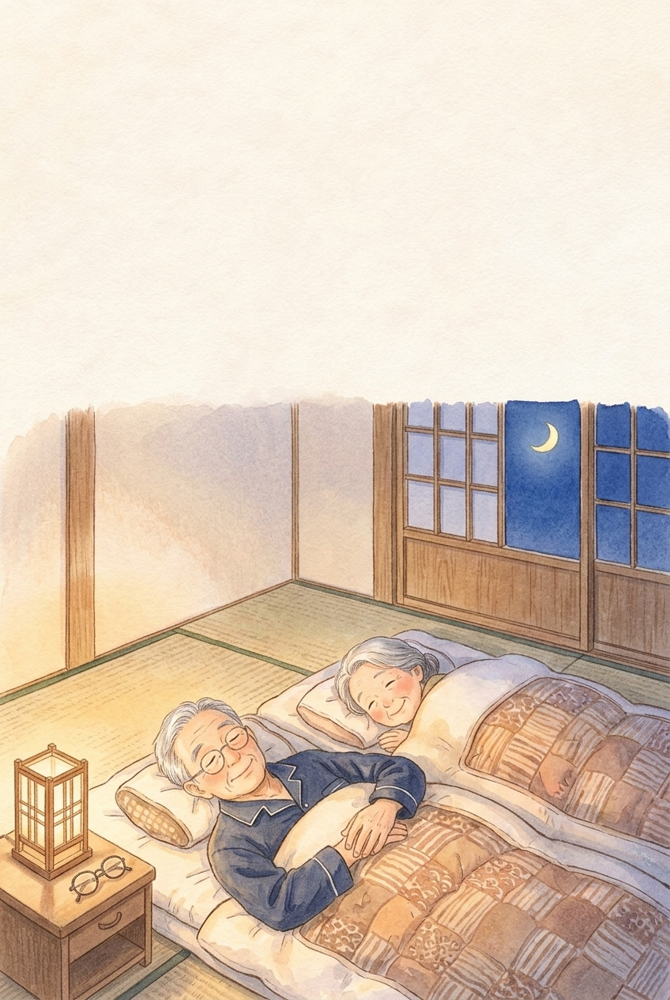
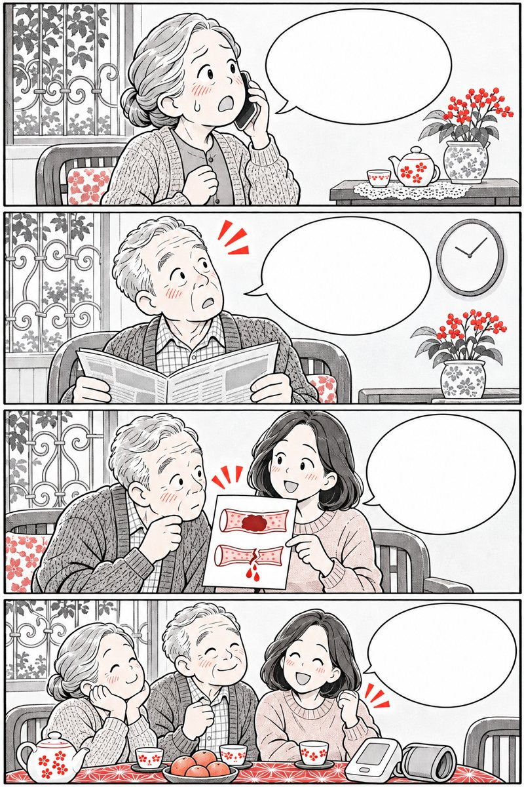
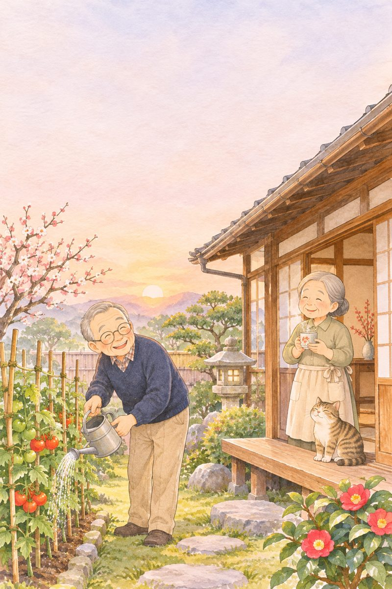
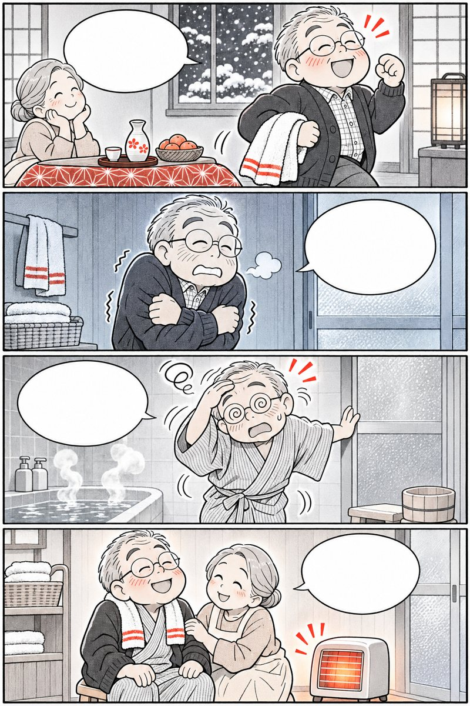
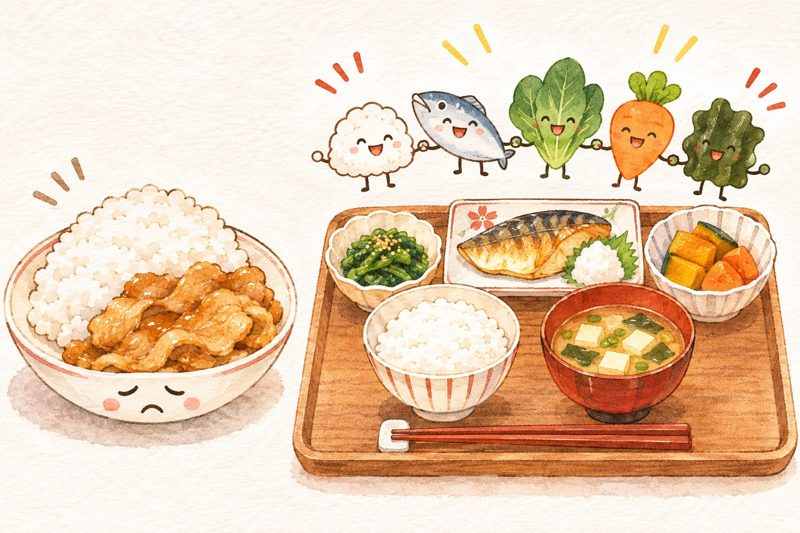
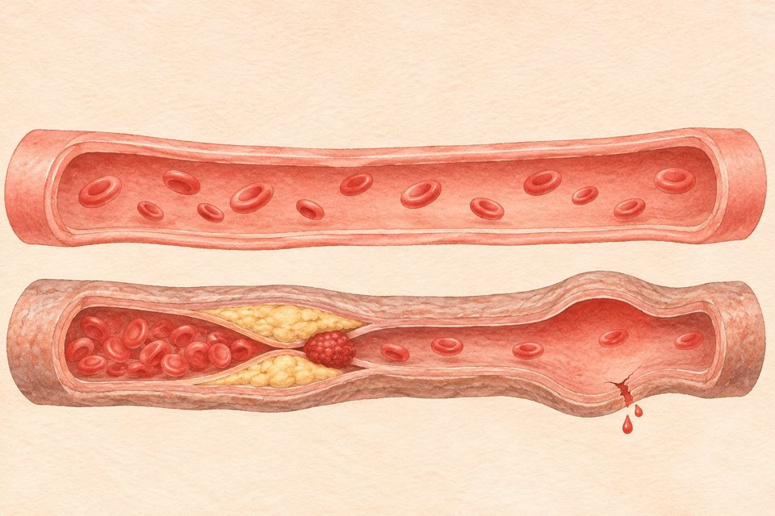
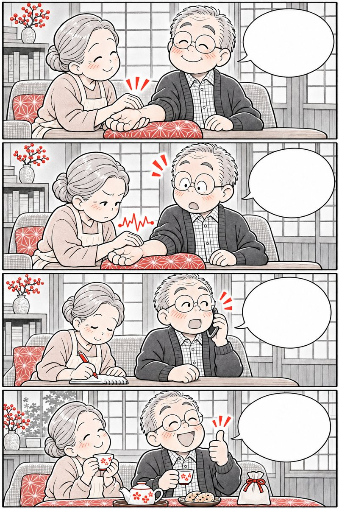

Ăn ngon ngủ sâudưỡng tâm kiểu Nhật
Nắng sớm chỉnh nhịp sinh học, ngâm chân ấm 40°C, bữa tối nhẹ bụng và thở bụng Tanden giúp ông bà ngủ tròn giấc.
Mục lục
Bấm vào chương để đọc.

Giấc ngủ
tuổi 60+
Đổi nhịp tự nhiên theo năm tháng
suimin no rizumu
Tối 9 giờ đã díp mắt, nhưng 3 giờ sáng đã tỉnh giấc — hiểu đúng đồng hồ giấc ngủ là bước đầu để hết lo âu.
Không cần ép mình ngủ đủ 8 tiếng
Trong Hướng dẫn Giấc ngủ vì Sức khỏe, Bộ Y tế Nhật Bản (MHLW) nhấn mạnh một sự thật giúp hàng triệu người cao tuổi trút bỏ nỗi lo:
Ở tuổi trên 60, thời lượng ngủ thực tế chỉ cần khoảng 6 đến 6,5 tiếng mỗi đêm. Quan trọng nhất là cảm giác tỉnh táo ban ngày chứ không phải nằm trên giường bao nhiêu tiếng.
Khi lớn tuổi, đồng hồ sinh học tự nhiên dịch sớm hơn khoảng 1–2 tiếng. Nếu ông bà đi nằm từ 8 giờ tối thì 2–3 giờ sáng cơ thể đã ngủ đủ và tự đánh thức dậy.

Nằm trên giường quá sớm khi chưa buồn ngủ chính là thủ phạm làm giấc ngủ bị đứt quãng nửa đêm!
Nguồn: Hướng dẫn Giấc ngủ vì Sức khỏe Quốc gia, Bộ Y tế, Lao động và Phúc lợi Nhật Bản (MHLW, 2023).
Đừng lên giường từ 8 giờ tối

3 giờ sáng đã tỉnh rồi… Ngủ từ 8h tối là đủ 7 tiếng rồi! Lùi sang 10h đêm nhé! Ngủ một mạch tới 5h sáng!Bớt lo lắng về số giờ ngủ là liều thuốc an thần tự nhiên đầu tiên.
Vì sao giấc ngủ tuổi lớn lại mỏng hơn?

Cứ mỗi 90 phút, giấc ngủ lại lượn sóng từ ngủ sâu sang ngủ nông. Ở tuổi 60+, có 3 thay đổi tự nhiên:
 Đủ nắng & vận động: ngủ sâu
Nằm sớm & lạnh chân: dễ tỉnh
Đủ nắng & vận động: ngủ sâu
Nằm sớm & lạnh chân: dễ tỉnh
- Melatonin giảm dần theo tuổi: cần ánh nắng buổi sáng để kích thích não tổng hợp lại mỗi ngày.
- Thức dậy 1–2 lần đi tiểu đêm là bình thường: chỉ cần giữ đèn vàng dịu, không xem đồng hồ, về giường thở chậm là ngủ tiếp được ngay.
Nguồn: Hiệp hội Nghiên cứu Giấc ngủ Nhật Bản (Japanese Society of Sleep Research).
Chưa buồn ngủ đã lên giường nằm chờ?

Càng nằm trằn trọc trên giường nhiều giờ, não bộ càng quen với việc “giường là nơi để lo nghĩ” chứ không phải nơi để ngủ.
Lên giường từ 8 giờ tối nằm chờ
Chỉ lên giường khi thật sự buồn ngủ (khoảng 21h30 – 22h00)
Tỉnh giấc lúc 2h sáng là bật đèn nhìn đồng hồ
Không xem đồng hồ ban đêm để tránh nhẩm tính giờ làm căng thẳng
Phải ngủ đủ 8 tiếng mới khỏe
Tuổi 60+ ngủ 6 – 6,5 tiếng mà ban ngày tỉnh táo là rất khỏe mạnh
Nguồn: Hướng dẫn Vệ sinh Giấc ngủ cho Người cao tuổi Nhật Bản.
Tự rà 9 thói quen làm mỏng giấc ngủ

Chạm vào những thói quen ông bà đang có để xem điều gì đang lấy mất giấc ngủ sâu:

15 phút nắng sớm
& chợp mắt trưa
Hẹn giờ Melatonin từ buổi sáng
asahi to hirune
Muốn tối nay 10 giờ buồn ngủ êm ái, công tắc hẹn giờ thực ra phải được bật từ… 7 giờ sáng!
Hẹn giờ giấc ngủ đêm bằng nắng ban mai
Các nhà thần kinh học Nhật Bản giải thích: trong não chúng ta có một chiếc đồng hồ hẹn giờ 14–15 tiếng:
- Sáng
Khi mắt đón ánh sáng tự nhiên buổi sáng, não bắt đầu tiết Serotonin giúp tinh thần vui vẻ, tỉnh táo.
- +15h
Đúng 14–15 tiếng sau khi đón nắng sáng, Serotonin tự chuyển hóa thành Melatonin mở cơn buồn ngủ tự nhiên.
- Trưa
Giấc chợp mắt Hirune 15–20 phút trước 14h chiều giúp tim mạch nghỉ ngơi mà không làm mất cơn buồn ngủ tối.

Chỉ cần đứng tưới cây bên hiên sáng hoặc đi bộ 15 phút trước 8 giờ sáng là đồng hồ não được lên dây cót!
Nguồn: Viện Tâm thần và Thần kinh Quốc gia Nhật Bản (NCNP).
Nắng mai tưới cây, trưa chợp mắt ngắn
 Mở rèm đón nắng ấm bà nhé!
Ăn sáng có trứng, đậu phụ!
Trưa chợp mắt 20 phút thôi!
Tối 10 giờ mắt díp êm ru!
Mở rèm đón nắng ấm bà nhé!
Ăn sáng có trứng, đậu phụ!
Trưa chợp mắt 20 phút thôi!
Tối 10 giờ mắt díp êm ru!
Ban ngày càng rõ nhịp sáng – động, ban đêm càng rõ nhịp tối – tĩnh.
Công thức “Sáng nắng — Trưa ngắn”
Hai việc ban ngày quyết định tới 70% chất lượng giấc ngủ ban đêm của người lớn tuổi:
 Sáng: Ánh sáng tự nhiên + nhai kỹ bữa sáng
Trưa: Chợp mắt 15–20 phút trước 14h
Sáng: Ánh sáng tự nhiên + nhai kỹ bữa sáng
Trưa: Chợp mắt 15–20 phút trước 14h
- Nhai kỹ bữa sáng giàu Tryptophan: trứng, đậu phụ, sữa đậu nành, chuối ăn vào buổi sáng cung cấp nguyên liệu để não tạo Serotonin dưới ánh nắng.
- Giấc chợp mắt Hirune (昼寝) 20 phút: ngả lưng ghế 15–20 phút sau bữa trưa giúp tỉnh táo suốt chiều mà không phạm vào “vốn ngủ” ban đêm.
Nguồn: Đại học Hiroshima & Hiệp hội Y học Giấc ngủ Nhật Bản.

“Đêm mất ngủ thì trưa phải ngủ bù 2 tiếng”?
Ngủ trưa quá 45 phút đẩy não vào giấc ngủ sâu ban ngày — vừa dậy thấy nặng đầu, vừa lấy mất sạch cơn buồn ngủ của tối hôm đó.
Làm tối thức trắng
- Đóng kín rèm cửa tối om buổi sáng
- Ngủ trưa li bì 1,5 – 2 tiếng trên giường
- Ngủ gật trên ghế lúc 4–5 giờ chiều
Giữ nhịp sinh học
- Mở toang rèm cửa ngay khi thức dậy
- Hẹn chuông chợp mắt 20 phút trước 14h
- Chiều đi bộ nhẹ hoặc tưới cây
Lịch trình “Vàng” cho giấc ngủ tuổi 60+
Buổi sáng & trưa
- 6:00–6:30: Dậy, mở rèm đón nắng 15 phút
- 7:00: Ăn sáng có trứng, đậu phụ, sữa
- 12:30: Chợp mắt 20 phút trên ghế tựa
Buổi chiều & tối
- 16:30: Đi bộ nhẹ 20 phút làm ấm người
- 18:30: Ăn tối nhẹ bụng, cách ngủ 3 tiếng
- 21:00: Ngâm chân ấm · 22:00: Ngủ
Buổi chiều thèm trà ấm, ông bà hãy đổi sang trà gạo lứt, trà hoa cúc hoặc nước ấm lát gừng không có caffeine nhé.
Tính “Giờ vàng sinh học” theo giờ dậy
Chỉ cần giữ đúng giờ thức dậy mỗi sáng trong 7 ngày, giờ buồn ngủ buổi tối sẽ tự khớp theo đồng hồ sinh học.

Ngâm chân ấm
đầu mát ngủ sâu
Công tắc hạ thân nhiệt kiểu Nhật
zukan sokunetsu · ashiyu
Cổ nhân Nhật có câu “Đầu mát, chân ấm” — khi đôi bàn chân ấm hồng tỏa nhiệt, não bộ sẽ bước vào giấc ngủ sâu.
Bí mật của độ chênh thân nhiệt 0,5°C
Nghiên cứu tại các viện giấc ngủ Nhật Bản chỉ ra: con người chỉ thật sự chìm vào giấc ngủ sâu khi nhiệt độ lõi bên trong cơ thể hạ xuống khoảng 0,5°C.
Ngâm bàn chân trong nước ấm 40°C khoảng 15 phút trước khi đi ngủ 60 phút làm mạch máu bàn chân giãn nở, giúp nhiệt độ bên trong thoát ra nhẹ nhàng và kéo cơn buồn ngủ đến nhanh gấp đôi.
Nhiều cô chú lớn tuổi bị lạnh bàn chân vào ban đêm: mạch máu đầu chi co lại giữ nhiệt, khiến nhiệt độ lõi không hạ xuống được và làm trằn trọc suốt nhiều giờ.
Làm ấm bàn chân không phải để tăng nhiệt, mà để mở cửa sổ tản nhiệt cho não được nghỉ ngơi!
Nguồn: Nghiên cứu Giấc ngủ và Thân nhiệt, Đại học Y khoa Nara & Hiệp hội Giấc ngủ Nhật Bản.
Chậu nước ấm 9 giờ tối, giấc êm 10 giờ đêm

Đêm nằm chân cứ lạnh ngắt… 9h tối ngâm chân 40 độ nhé! Ngập mắt cá 15 phút rồi lau khô. Chân ấm, đặt lưng là ngủ êm!Mười lăm phút ngâm chân ấm buổi tối quý hơn mọi viên thuốc bổ thần kinh.
3 bước “Mở khóa thân nhiệt” buổi tối
Để công tắc thân nhiệt hoạt động nhịp nhàng nhất, người Nhật tuân thủ đúng 3 mốc nhỏ:
 1. Nước ấm dịu 39–40°C, ngập qua mắt cá chân
2. Thực hiện trước giờ ngủ 60 phút
1. Nước ấm dịu 39–40°C, ngập qua mắt cá chân
2. Thực hiện trước giờ ngủ 60 phút
- Không dùng nước quá nóng (trên 42°C): nước quá nóng kích thích thần kinh giao cảm làm tim đập nhanh và tỉnh ngủ; người tiểu đường dễ bị bỏng da chân.
- Lau khô kẽ chân ngay sau khi ngâm: dùng tất cổ chân mỏng rộng rãi nếu bật máy lạnh, tránh tất thun bó chặt làm cản máu lưu thông.
Nguồn: Hướng dẫn Tắm và Ngâm chân An toàn cho Người cao tuổi Nhật Bản.

Mang tất dày bó chặt đi ngủ có giúp ấm chân hơn?
Tất thun bó chặt cổ chân làm cản trở tuần hoàn máu và ngăn lòng bàn chân tỏa nhiệt, khiến nửa đêm lại đổ mồ hôi lạnh và khó ngủ sâu.
Làm trằn trọc
- Tắm nước lạnh hoặc tắm sau 22h đêm
- Pha nước ngâm chân nóng già phỏng rát
- Mang tất thun chật cứng suốt đêm
Dễ vào giấc
- Ngâm chân ấm lúc 20h30 – 21h00
- Thử nước bằng khuỷu tay (~40°C)
- Giữ ấm cổ chân, để bàn chân thoáng
Công thức Ngâm chân Ashiyu tại nhà
Cách pha nước
- Nhiệt độ ấm dịu 39°C – 40°C
- Thả 3 lát gừng đập dập và chút muối hạt
- Ngập trên mắt cá chân khoảng 4 ngón tay
Trong & sau khi ngâm
- Ngồi tựa lưng ghế thoải mái 12 – 15 phút
- Lau thật khô lòng bàn chân và kẽ ngón
- Xoa ấm lòng bàn chân (huyệt Dũng Tuyền)
Lưu ý: Người có vết thương hở ở chân hoặc giảm cảm giác do tiểu đường cần nhờ người thân kiểm tra nhiệt độ nước trước.
Sổ theo dõi Giấc ngủ 7 buổi sáng
Mỗi sáng thức dậy, ông bà ghi ước lượng số giờ ngủ được đêm qua và số lần thức giấc giữa đêm (VD: 6 giờ / 1 lần).
Đánh giá vào buổi sáng, không nhìn đồng hồ ban đêm
Ngủ được 5,5 – 6,5 tiếng và sáng dậy thấy đầu óc nhẹ nhõm, ăn sáng ngon miệng là giấc ngủ đã đạt chuẩn khỏe mạnh.
Số chỉ lưu ngay trong điện thoại hoặc máy tính đang mở trang này.

Bữa tối nhẹ bụng
cách ngủ 3 tiếng
Êm dạ dày — Đêm ngủ một mạch
hara hachi bu · yoru shokuji
“Dạ dày không yên thì卧 (ngọa) bất an” — bụng còn đầy thức ăn và nhiều nước canh sát giờ đi nằm là thủ phạm hàng đầu gây trằn trọc và tiểu đêm.
Quy tắc “3 tiếng — 8 phần no” buổi tối
Người cao tuổi Nhật Bản giữ kỷ luật bàn ăn buổi tối rất rõ ràng để bảo vệ cả dạ dày lẫn giấc ngủ:
Ăn tối xong trước giờ đi ngủ ít nhất 3 tiếng (ví dụ ngủ 22h thì ăn tối xong lúc 18h30–19h00) giúp dạ dày tiêu hóa hết thức ăn, không trào ngược khi nằm xuống.
Đặc biệt, người Nhật hạn chế uống canh loãng hoặc nước lọc ồ ạt sau 20 giờ tối để giảm số lần thức dậy đi tiểu đêm — nguyên nhân làm đứt gãy giấc ngủ của hơn 60% người trên 60 tuổi.
Tối khát nước, ông bà chỉ cần nhấp 1–2 ngụm nước ấm nhỏ làm ẩm cổ họng thay vì uống cả cốc đầy nhé!
Nguồn: Hiệp hội Tiêu hóa & Tiết niệu Lão khoa Nhật Bản.
Ăn tối sớm lúc 6 rưỡi, ấm bụng nhẹ lòng
 Tối ăn thịt mỡ no căng khó ngủ lắm!
Đổi sang cá hấp, đậu phụ, canh ấm!
Ăn lúc 6 rưỡi, nhai chậm 8 phần no.
Bụng êm ru, đêm không phải dậy!
Tối ăn thịt mỡ no căng khó ngủ lắm!
Đổi sang cá hấp, đậu phụ, canh ấm!
Ăn lúc 6 rưỡi, nhai chậm 8 phần no.
Bụng êm ru, đêm không phải dậy!
Bữa sáng ăn cho mình, bữa trưa ăn cho sức, bữa tối ăn vừa đủ để thương cái dạ dày.
Thực đơn “Dưỡng giấc” trên mâm cơm Việt
Chọn món ăn tối mềm ấm, giàu Tryptophan, Magie và GABA tự nhiên giúp thần kinh dịu lại nhanh chóng:

Nên chọn: đậu phụ ấm, cá hấp, hạt sen, rau mồng tơi, chuối chín Nên tránh tối muộn: đồ chiên mỡ, dưa cà muối mặn, trà đặc, rượu bia- Ăn mặn buổi tối làm khát nước và tăng tiểu đêm: giảm muối bữa chiều giúp thận không phải làm việc quá tải lúc nửa đêm.
- Tránh hiểu lầm “uống rượu cho dễ ngủ”: rượu làm lim dim nhanh lúc đầu nhưng phá vỡ giấc ngủ sâu nửa đêm về sáng và gây khô họng, tim đập nhanh.
Nguồn: Viện Dinh dưỡng Quốc gia Nhật Bản.

Uống 1 ly sữa to sát giờ lên giường có tốt cho mọi người?
Uống 250ml chất lỏng ngay lúc 21h30–22h00 dễ làm người lớn tuổi phải thức dậy đi tiểu lúc 1–2 giờ sáng và gây trào ngược nếu nằm ngay.
Gây đầy bụng & tiểu đêm
- Ăn tối muộn sau 20h00 mới buông đũa
- Húp nhiều bát canh mặn lúc tối muộn
- Uống cốc sữa lớn sát lúc đặt lưng nằm
Êm bụng suốt đêm
- Ăn tối 18h00–19h00, nhai kỹ 20 lần
- Nếu uống sữa ấm: chỉ ~100ml trước ngủ 90 phút
- Đi tiểu sạch trước khi lên giường
4 quy tắc bàn ăn chiều giúp ngủ một mạch
Thử 7 tối liền
Ăn nhẹ bụng & ngâm chân ấm, đóng dấu
Thở bụng Tanden
dịu thần kinh tự chủ
Hơi thở 4–7–8 đưa não vào sóng thư giãn
tanden kokyu · fukukokyu
Khi suy nghĩ còn chạy vòng quanh trong đầu, ta không thể ra lệnh cho não “ngủ đi”, nhưng có thể dùng hơi thở chậm để bật dây thần kinh nghỉ ngơi.
Công tắc chuyển từ “Lo âu” sang “An tĩnh”
Hệ thần kinh tự chủ của chúng ta có 2 nhánh đối lập như chân ga và chân phanh:
Khi thở bằng bụng dưới (đan điền — Tanden) với nhịp thở ra dài gấp đôi hít vào (ví dụ hít mũi 4 giây — thở chúm môi 7–8 giây), dây thần kinh phế vị được kích hoạt làm nhịp tim chậm lại và huyết áp êm dịu trong 60 giây.
Phương pháp thở Tanden Kokyu (丹田呼吸) đã được các thiền sư và bác sĩ Nhật Bản ứng dụng hàng trăm năm giúp người lớn tuổi xua tan hồi hộp, bồn chồn khi đặt lưng xuống chiếu.
Bí quyết quan trọng nhất không nằm ở lúc hít vào, mà nằm ở hơi thở ra thật chậm, thật êm như thổi sợi tơ!
Nguồn: Nghiên cứu Sinh lý học Hô hấp & Thần kinh Tự chủ, Đại học Y Toho Nhật Bản.
Đặt tay lên bụng, thở êm 5 nhịp
 Nằm xuống mà đầu cứ nghĩ trăm thứ…
Ông đặt tay lên bụng dưới rốn nhé!
Hít mũi 4 nhịp, thở ra thật êm 8 nhịp.
Ngực nhẹ bẫng, mắt díp lại rồi!
Nằm xuống mà đầu cứ nghĩ trăm thứ…
Ông đặt tay lên bụng dưới rốn nhé!
Hít mũi 4 nhịp, thở ra thật êm 8 nhịp.
Ngực nhẹ bẫng, mắt díp lại rồi!
Tâm theo hơi thở: hơi thở càng dài và êm, tâm trí càng tĩnh lặng.
Bài thở Tanden 60 giây ngay trên giường
Ông bà có thể nằm ngửa kê gối vừa phải, co nhẹ hai gối và đặt bàn tay ấm lên vùng bụng dưới rốn 3 ngón tay:

Hít mũi 4 giây: bụng nâng nhẹ lên Thở miệng 7–8 giây: bụng xẹp êm xuống- Thả lỏng cơ hàm và hai bờ vai: trước khi thở, hãy nhún nhẹ vai lên rồi buông rơi hoàn toàn xuống nệm, môi khép hờ không nghiến răng.
- Không gồng nín thở nếu thấy hụt hơi: người lớn tuổi chỉ cần hít vừa sức 3–4 giây và thở ra từ từ 6–8 giây thật tự nhiên, không ép ngực.
Nguồn: Hướng dẫn Thực hành Thư giãn Giấc ngủ Nhật Bản.

Trằn trọc quá 20 phút thì cứ nằm nhắm mắt ép ngủ tiếp?
Càng nằm ép ngủ và nhìn đồng hồ xem “mấy giờ rồi”, não càng tiết hormone căng thẳng làm chiếc giường biến thành nơi lo âu.
Làm tỉnh thêm
- Nằm trằn trọc nhìn đồng hồ đếm giờ
- Bật điện thoại đọc tin tức lúc nửa đêm
- Hít thở gấp gáp bằng ngực trên
Dỗ giấc tự nhiên
- Úp mặt đồng hồ đi, không xem giờ đêm
- Đặt tay lên bụng thở Tanden êm 6 nhịp
- Nghe tiếng mưa rơi hoặc nhạc không lời nhỏ
Đồng hồ dẫn nhịp thở Tanden 60 giây
Thử 7 tối
Tối nào tập thở Tanden êm dịu, đóng dấu
Dưỡng tâm kiểu Nhật
buông việc trước đèn ngủ
Sổ tay “Gác lo” và 3 điều biết ơn cuối ngày
anshin · kansha nikki
Gối êm nệm ấm đến mấy cũng khó ngủ nếu trong lòng còn mang theo chuyện ngày mai lên giường.
Nghi thức “Gửi việc cho trang giấy” lúc 21 giờ
Các chuyên gia tâm lý lão khoa Nhật Bản gợi ý thói quen 5 phút viết sổ đầu giường trước khi tắt đèn:
Viết ra giấy 1 việc cần nhớ cho ngày mai (để não yên tâm không sợ quên) và 2 điều nhỏ khiến hôm nay thấy ấm lòng giúp giảm 40% thời gian trằn trọc trước khi ngủ.
Người Nhật gọi đây là Kansha Nikki (Nhật ký biết ơn): một bát canh ngon buổi tối, tiếng cười của cháu nhỏ, hay một nhành hoa vừa nở ngoài hiên đều là liều thuốc dưỡng tâm êm dịu nhất.

Khi đã ghi việc ngày mai vào sổ rồi, ông bà hãy tự nhủ: “Hôm nay thế là trọn vẹn, việc mai để sáng mai tính!”
Nguồn: Hội Tâm thần học & Tâm lý Lão khoa Nhật Bản.
Ghi vào sổ nhỏ, lòng nhẹ như mây

Sợ mai quên lịch khám với uống thuốc… Ghi hết vào cuốn sổ đầu giường này nhé! Bật đèn chân tường dịu, chúc bà ngủ ngon! Sáng dậy tinh thần sảng khoái quá!Buông một nỗi lo trước khi nhắm mắt là tặng cho trái tim cả một đêm bình yên.
3 chuẩn bị nhỏ cho đêm an giấc, sáng an toàn
Sự an tâm về không gian phòng ngủ giúp người lớn tuổi ngủ sâu hơn mà không giật mình lo lắng:
 Đèn vàng thấp chân tường: soi lối nếu dậy đêm, không làm chói mắt
Sổ tay & kính đầu giường: mọi thứ trong tầm tay với
Đèn vàng thấp chân tường: soi lối nếu dậy đêm, không làm chói mắt
Sổ tay & kính đầu giường: mọi thứ trong tầm tay với
- Quy tắc 30 giây khi dậy đêm hoặc sáng sớm: ngồi dậy từ từ, rũ nhẹ bàn chân 30 giây trên mép giường rồi mới đứng lên đi vệ sinh để tránh tụt huyết áp tư thế.
- Không tự ý dùng thuốc ngủ truyền miệng: nhiều loại thuốc an thần gây chóng mặt và tăng nguy cơ té ngã ban đêm ở người trên 60 tuổi — luôn hỏi bác sĩ chuyên khoa.
Nguồn: Hướng dẫn Phòng ngừa Té ngã ban đêm & Giấc ngủ An toàn Nhật Bản.

Có nên bàn chuyện tiền nong hay chuyện buồn lúc 9–10 giờ tối?
Ban đêm não đã mỏi, mọi cuộc tranh luận hay tin tức căng thẳng sau 20 giờ tối đều bị khuếch đại gấp nhiều lần và giữ nhịp tim đập nhanh suốt đêm.
Làm nặng lòng
- Bàn chuyện căng thẳng sau 20 giờ tối
- Xem phim gay cấn, tin tức tiêu cực trước ngủ
- Tự ý xin đơn thuốc ngủ của hàng xóm
Dưỡng tâm an hòa
- Gác việc lớn sang buổi sáng hôm sau
- Nghe nhạc êm, trò chuyện nhẹ nhàng
- Ghi 3 điều biết ơn vào sổ đầu giường
Thẻ “Gác lo — An giấc” mỗi tối
Thông tin ghi trên thẻ tự lưu ngay trên điện thoại này. Chúc ông bà và gia đình mỗi đêm đều an giấc!